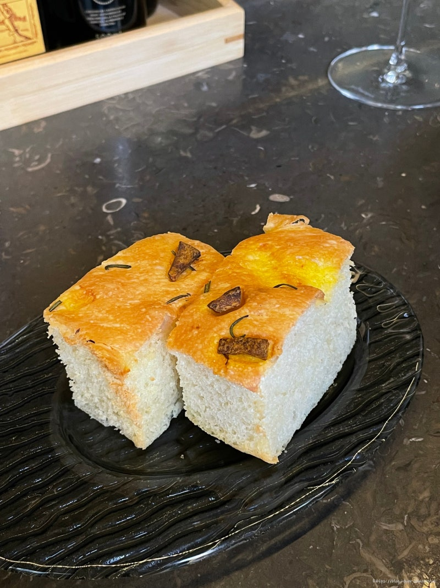
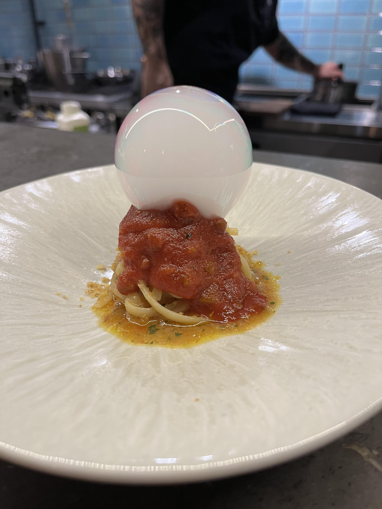

쵸이닷
모수
비아 톨레도 파스타바
610 Magnolia
코스 요리
로마식 아란치니
치즈와 토마토를 활용한 밥튀김.

포카치아 빵
올리브 오일과 소금,
허브 등으로 맛을 낸 빵.
홍합 토마토 파스타
토마토의 산미를 극대화한 파스타.

푸타네스카
엔초비와 케이퍼를 사용한
토마토 소스 파스타.
나폴리식 피자튀김
부라타치즈를 튀김 안에 넣어
바질 향과 같이 느낄 수 있는 요리.
트러플 생면 파스타
트러플 향을 많이 느낄 수 있는 파스타.
예약
 홍합 토마토 파스타
토마토의 산미를 극대화한 파스타.
홍합 토마토 파스타
토마토의 산미를 극대화한 파스타.